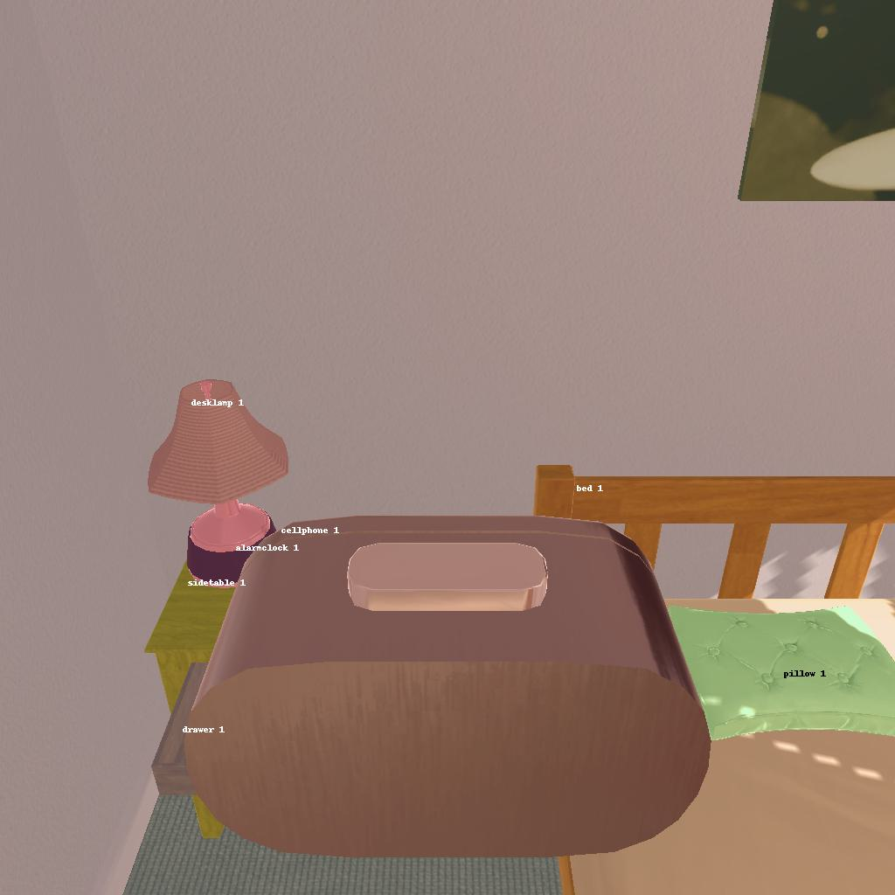
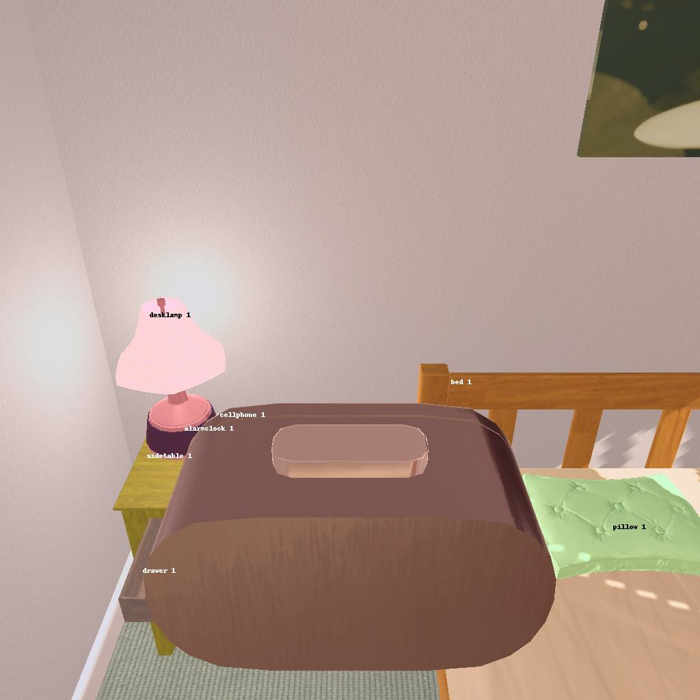

---------------------------------------------------------task: 0---------------------------------------------------------
--------------------------------------------------------------------------------------------------------------------------------------------------------------------
--------------------------------------------------------------------------------------------------------------------------------------------------------------------
Step:--------------------------------------------------------------------------14-------------------------------------------------------------------------------
----------------------------------------
VLM Prompt:
Image1:
Image2:
Image3:
**Instruction**
1. Analyze the provided image to identify all visible household objects, focusing on those relevant to the task description "examine the alarmclock with the desklamp."
2. Use the analysis of the image and the task hint "The agent must find an object of the desired type, locate and turn on a light source with the desired object in-hand." to answer the question: what is the most reasonable action in the choices for the task description "examine the alarmclock with the desklamp"?
4. Decide and write the answer using the template: The answer is: (i): , where i is the real number. If there is no desired object in the image, search every place based on **Initial Observation** to find the object. And if no one is exactly correct, choose a similar answer.
**Initial Observation**
You are in the middle of a room. Looking quickly around you, you can see bed (1), sidetable (1), drawer (1-11), dresser (1), safe (1), laundryhamper (1), garbagecan (1)
**Answer Choices**
(1): go to bed 1
(2): go to drawer 1
(3): go to drawer 2
(4): go to drawer 4
(5): go to drawer 5
(6): go to drawer 6
(7): go to drawer 7
(8): go to drawer 8
(9): go to drawer 9
(10): go to drawer 10
(11): go to drawer 11
(12): go to safe 1
(13): go to laundryhamper 1
(14): go to garbagecan 1
(15): put alarmclock 1 in/on sidetable 1
(16): use desklamp 1
(17): examine alarmclock 1
(18): examine sidetable 1
**Answer**
Let's think step by step by following the instructions.
----------------------------------------
----------------------------------------
Original Response:
First, we need to identify the alarmclock and the desklamp in the images provided. In all three images, we can see "alarmclock 1" on the sidetable 1. In Image3, we can also see "desklamp 1" on the same sidetable.
Now, let's consider the task description "examine the alarmclock with the desklamp" and the hint provided. The agent must find an object of the desired type (the alarmclock), locate and turn on a light source (the desklamp) with the desired object in-hand.
The most reasonable action for the agent to accomplish this task would be to first ensure the desklamp is on so that the alarmclock can be examined properly. Since the alarmclock is already on the sidetable, there's no need to move it. Thus, the next step is to interact with the desklamp.
The answer is: (16): use desklamp 1
----------------------------------------
----------------------------------------
>>> Refine Original VLM Response and Get Pure Action: use desklamp 1
----------------------------------------
-----------------------------------------------------------------
Running time: 13.79199767112732 seconds
Total Money: 0.51033
-----------------------------------------------------------------
-----------------------------------------------------------------
Text Observation:You turn on the desklamp 1.
-----------------------------------------------------------------
SUCCEED